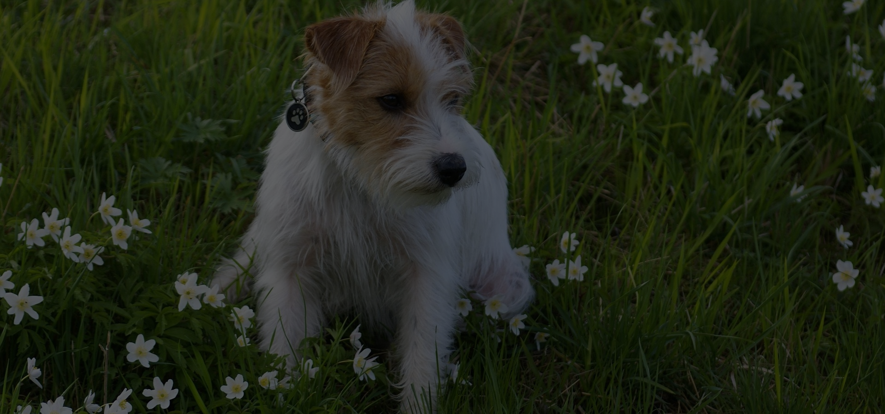

Hospital introduction
서울대학교 동물병원은
반려동물의 건강과 삶의 질을 지키는 것을
중요한 사명으로 삼고,
반세기 넘게 수의학 교육과 연구, 진료의 중심에서 걸어왔습니다.
수많은 보호자분들의 신뢰속에 성장해온 우리 병원은,
최고 수준의 의료 서비스와 전문성을 갖춘
국내 대표 동물의료기관으로 자리매김하고 있습니다.
우리 병원은 다양한 임상 전문과를 갖춘
체계적인 의료 시스템을 통해,
반려동물에게 정확하고 신속한 진단과
맞춤형 치료를 제공합니다.
풍부한 임상 경험과 최신 의료기술을 갖춘 의료진이
보호자 여러분과 함께 반려동물의 건강한 삶을 만들어가고자
늘 최선을 다하고 있습니다.
또한, 대학병원으로서의 사명에 따라 미래 수의사를 양성하고,
반겨동물 의료 분야의 새로운 지식을 창출하는 데도
적극적으로 힘쓰고 있습니다.
이를 통해 서울대학교 동물병원은
반려동물 의료를 선도하는 교육과 연구의 중심이자,
보호자 여러분이 가장 먼저 찾고
가장 오래 신뢰할 수 있는 병원이 되기 위해 노력하고 있습니다.
앞으로도 저희 서울대학교 동물병원은
동물과 사람 모두가 행복한 사회를 만들기 위해,
따뜻한 마음과 전문적인 진료로 여러분 곁을 지키겠습니다.
감사합니다.